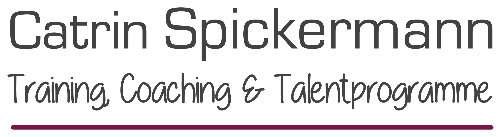
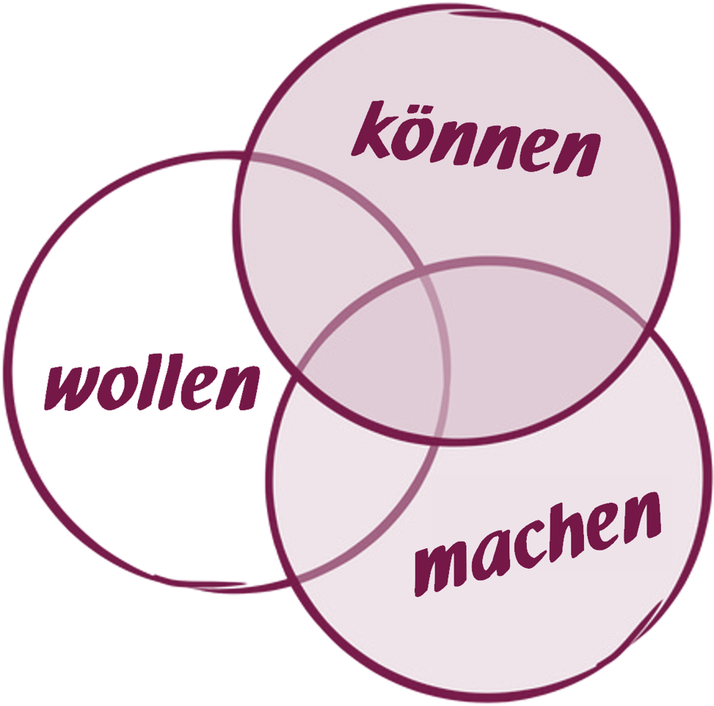

Ich glaube an kleine Schritte.
Ich begleite Menschen und Unternehmen dabei, Klarheit zu gewinnen, Potenziale zu entfalten und Veränderungen nachhaltig in den Arbeitsalltag zu integrieren.
Ob im Training, im Coaching oder in Talentprogrammen: Ich gestalte Lernräume, in denen fundierte Modelle auf den Alltag treffen. Hier wird sichtbar, welche Veränderungen anstehen und wo schon kleine Anpassungen viel bewirken.
Weiterentwicklung statt reiner Wissensvermittlung
Jedes Training beginnt mit einem Gespräch darüber, was Ihre Organisation braucht. Daraus entwickle ich ein Konzept, das Inhalte und Übungen auf Ihre Führungskräfte und Mitarbeitenden abstimmt. Zwischen den Modulen erproben die Teilnehmenden Neues im Arbeitsalltag. Ihre Erfahrungen fließen in die nächste Einheit ein.
Veränderung beginnt mit Klarheit
Wer etwas verändern möchte, muss nicht gleich wissen, wie. Bringen Sie mit, was Sie beschäftigt, denn manches lässt sich im Gespräch leichter klären. Ich höre zu und achte besonders auf das, was bei Ihnen schon gut funktioniert. So finden wir gemeinsam heraus, was Ihnen wichtig ist und was sich für Sie richtig anfühlt. Alles Weitere entwickeln wir gemeinsam, bis die nächsten Schritte in Ihren Alltag passen.
Begleitung auf dem Weg zu mehr Verantwortung
Ob sich ein Talentprogramm lohnt, zeigt sich im Arbeitsalltag. Darauf richte ich meine Programme für Trainees, Young Potentials und junge Führungskräfte aus. Über 12 bis 24 Monate wechseln sich aufeinander aufbauende Module und Einzelcoachings ab. Theorie gibt es in kleinen Portionen. Die meiste Zeit gehört Übungen und dem Austausch.
Ihr Unternehmen bekommt Nachwuchskräfte, die ihre Rolle sicherer ausfüllen. Gleichzeitig erleben die Talente, dass ihre Weiterentwicklung dem Unternehmen etwas wert ist.

Kopf, Herz & Hand im Einklang
Fundiertes, klar strukturiertes Wissen, abgestimmt auf die jeweilige Situation, macht Zusammenhänge verständlich und stärkt die Fähigkeit, Probleme zu lösen und Entscheidungen zu treffen.
Eine vertrauensvolle Lernumgebung schafft Raum für Reflexion, persönliche Entwicklung und den Mut, die eigene Komfortzone zu verlassen.
Praktische Übungen, ehrliches Feedback und konkrete nächste Schritte sorgen dafür, dass Neues direkt im Arbeitsalltag wirksam wird.
Aus Lernen wird Entwicklung, wenn Wissen auf den Willen zur Veränderung trifft und beides im Handeln sichtbar wird.
Leidenschaft
Mir macht es Freude, Menschen in ihrer Entwicklung zu begleiten. Diese Haltung bringe ich in jedes Training und jedes Coaching mit, denn Begeisterung überträgt sich. Sie macht es leichter, Neues auszuprobieren und dranzubleiben, auch wenn es anstrengend wird.
Effektivität
Effektiv zu sein heißt für mich, die Stellschrauben zu finden, die den größten Unterschied machen. Deshalb steht Klarheit am Anfang: Was ist das Ziel, und wo lohnt es sich anzusetzen? Oft genügen dann wenige gezielte Impulse, um viel zu bewegen.
Lösungsorientierung
Ich nehme Probleme ernst, halte mich aber nicht lange mit ihnen auf. Stattdessen richte ich den Blick früh auf das, was bereits gut funktioniert, und auf die nächsten konkreten Schritte im eigenen Einflussbereich. So wird Veränderung zu etwas, das man selbst in der Hand hat.
Mich treibt seit Jahren eine Frage um: Wie wird aus einem guten Vorsatz eine Gewohnheit, die ohne Willenskraft auskommt? Studium, Beruf und Familienalltag haben mir gezeigt, dass Ziele und Pläne dafür nur ein Teil der Antwort sind. Entscheidend sind Klarheit, Motivation und Selbstwirksamkeit.
Ich glaube an kleine Schritte. Einzeln wirken sie unscheinbar. Über Monate und Jahre verändern sie die Richtung, in die sich ein Leben bewegt. Diese Schritte zu finden und im Alltag zu verankern, ist meine Arbeit.
Diese Schritte zu finden, ist meine Arbeit.
Lassen Sie uns sprechen
Im ersten Gespräch klären wir, was Sie brauchen und ob wir zusammenpassen. Rufen Sie an oder schreiben Sie mir.